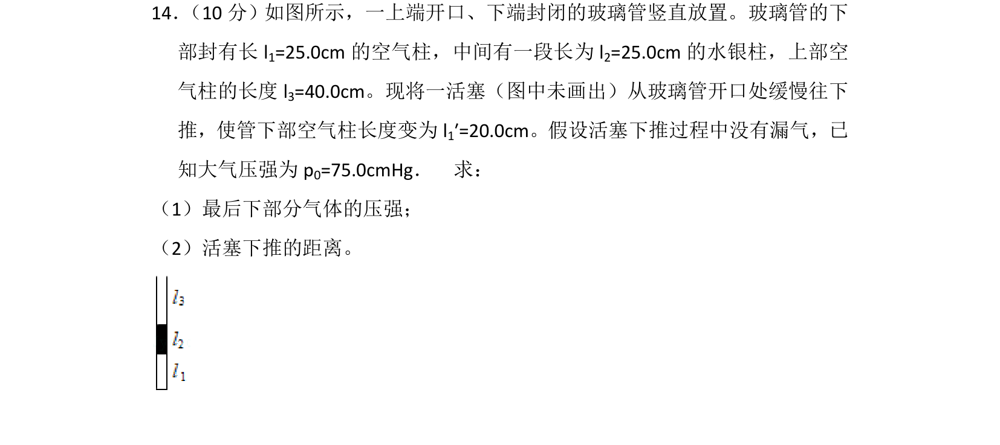
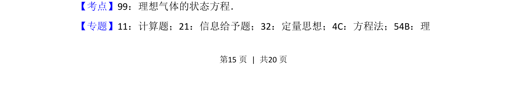
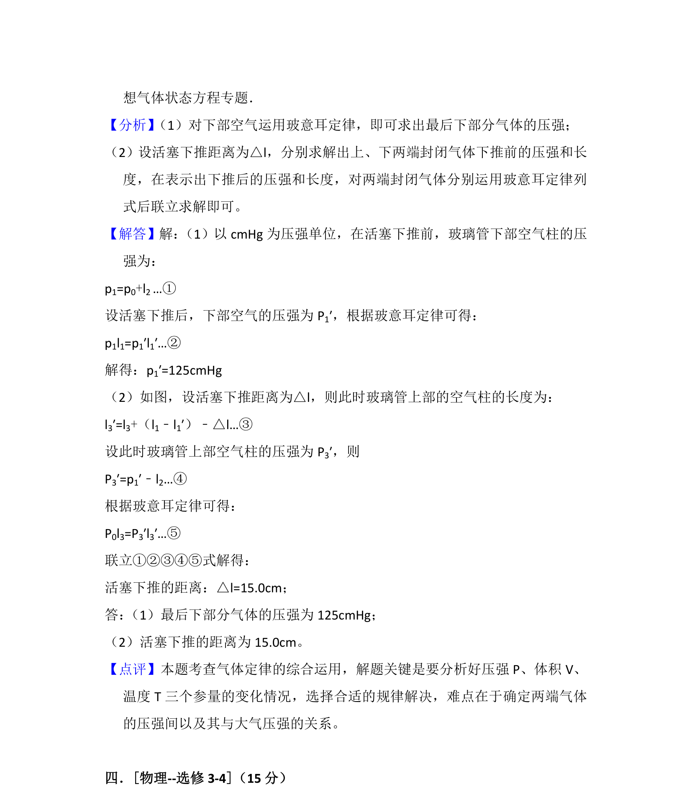

考点：理想气体状态方程 压强 等温变化

本题考查理想气体状态方程的应用，通过活塞下推过程分析气体压强和体积变化。


📄 原 PDF 第 15 页：
素材/真题/吉林/2008-2024·（吉林）物理高考真题/2013年高考物理试卷（新课标Ⅱ）（解析卷）.pdf
14． （10分）如图所示，一上端开口、下端封闭的玻璃管竖直放置。玻璃管的下 部封有长l 1=25.0cm的空气柱，中间有一段长为l 2=25.0cm的水银柱，上部空 气柱的长度l 3=40.0cm。现将一活塞（图中未画出）从玻璃管开口处缓慢往下 推，使管下部空气柱长度变为l 1′=20.0cm。假设活塞下推过程中没有漏气，已 知大气压强为p 0=75.0cmHg． 求： （1）最后下部分气体的压强； （2）活塞下推的距离。
【考点】99：理想气体的状态方程．菁优网版权所有 【专题】11：计算题；21：信息给予题；32：定量思想；4C：方程法；54B：理